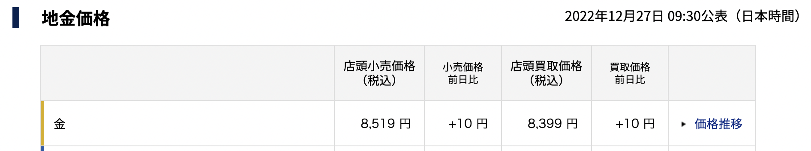

誰も教えてくれないゴールド投資のやり方
2022-12-27 by 内田裕之
- 「金（ゴールド）に投資するにはどうしたらいいの？」
- 「ゴールドへの投資を教えてほしい！」
この記事はそんな方へ向けて書いています。
こんにちは。
ゴールドへの投資で資産形成に励むうっちゃんです。
ゴールドに投資したいけど、やり方がわからないと悩んでいませんか？
実は純金積立を使えば簡単に積立投資ができるのです。
この記事ではゴールドのやり方を紹介します。
資産形成に役立つと嬉しいです。
この記事は内容に広告・プロモーションを含みます。
ゴールド投資のやり方
前回の記事で誰も教えてくれないゴールド投資の魅力を紹介しました。
（参考：誰も教えてくれないゴールド投資の魅力とは）
今回は具体的なやり方やポイントを紹介します。
純金積立
最もおすすめなのが純金積立です。
毎月一定額、継続して金を購入する投資手法であり、月1,000円からでも始められます。
購入時の総額に比べて、売却したときの額が高ければ利益が出ます。
なお、買付価格は売却価格よりも高く設定されています。

買ってすぐに売却しても損失が発生します。
数年の単位でじっくりと積み立てて資産を増やしていくのが魅力です。
純金積立は地金商や証券会社で純金積立の専用口座を開設すれば投資できます。
私はSBI証券と楽天証券で純金積立をしています。
SBI証券は毎月設定した金額を上限に、その月の営業日数ごとに買付します。
手数料は約定代金の1.65％です。
（参考：ネクシィーズ・トレード、SBI証券）
楽天証券も同様に引き落としの翌月から按分した一定金額を毎営業日に買付します。
手数料も同じく約定代金の1.65％です。
（参考：楽天証券）
なお、売買によって利益が発生した場合は譲渡所得として総合課税の対象になります。
保有期間が5年以内の場合は短期譲渡所得、5年超の場合は長期譲渡所得となり、それぞれの所得金額は次のように計算されます。
- 短期譲渡所得（保有期間5年以内）：売却益－購入額－譲渡所得の特別控除50万円
- 長期譲渡所得（保有期間5年超）：（売却益－購入額－譲渡所得の特別控除50万円）÷2
50万円の特別控除を利用できるのが魅力です。
（参考：はじめての金・プラチナ取引）
金地金・金貨
現物のゴールドを買って保有する投資法です。
例えば愛媛県にお住まいの方は松山市内の銀天街にある桜産業で購入できます。
（参考：桜産業）
現物の売買価格は純金積立の価格より高くなっています。
また、500g未満の地金を売買するときには代金とは別に手数料が発生します。
（参考：売買価格と別途手数料）
消費税も上乗せされます。
売却時には消費税分が上乗せして戻ってくるので、購入時に多く払うだけです。
（参考：金の売買時は消費税がかかる？金と税金の関係をわかりやすく解説）
さらに金貨や金を使った作品だと制作費も上乗せされますが、売却時は金の量で評価されるので投資としては魅力が下がります。
ちなみにメルカリでも金貨は買えますが、割高だったり偽物のリスクもあるのでおすすめしません。
地金の売買によって利益が発生した場合は譲渡所得として総合課税の対象になります。
（参考：No.3161 金地金の譲渡による所得）
金投資信託・ETF
証券会社の投資信託やETFを通じて金に投資することもできます。
売買によって利益を得た場合は、株式や投資信託と同様に、分離課税の譲渡所得となり税率は20.315％です。
また、損失が出た場合には損益通算ができます。
（純金積立や現物ではできません。）
純金積立は総合課税なので給与と合算されて課税されるので、年収が高い方は不利になります。
そこで金ETFを使えば税金が抑えられるというわけです。
しかし、ETFなので信託報酬などの手数料がかかる点には注意が必要です。
CFD
FXトレードのような形でゴールドに投資することもできます。
買い注文だけでなく売り注文もできるので、価格が下がるときも利益を狙うことができます。
レバレッジ取引ができるので少額でトレードできますが、ロスカットや追証のリスクがあるので注意が必要です。
なお、トレードで得た利益は雑所得として課税の対象になります。
（参考：CFD 確定申告時のお取引確認方法）
ゴールド投資を学べる本

これまでの記事でゴールド投資の魅力ややり方を詳しく解説してきました。
さらに学びたい、自分で勉強したいという方もいらっしゃると思います。
そこで私がゴールド投資を学ぶのに役立った本を2冊紹介します。
ゴールド投資
高橋ダン著のゴールド投資です。

超カリスマ投資系YouTuberが教える ゴールド投資――リスクを冒さずお金もちになれる方法
本書は、世界でもっともわかりやすいゴールド投資の専門書です。
「なんで金なの？」「投資なら、株やFXなど他にもっと重要な商品があるでしょう？」
そんな声が聞こえてきそうですが、ここには明確な理由があります。
金は、日本人のみなさんの注目度が低いにもかかわらず、非常に大きな可能性を秘めた投資商品です。
年金制度への不安を抱えていたり、老後の資金不足に悩んでいたりする日本人は多いと思いますが、本書のゴールド投資はあらゆる経済的な問題を解決する最適解になると思っています。
そのことを伝えるために、一冊まるごとゴールド投資の本を書こうと思ったのです。（「はじめに」より）
初心者でも読みやすいですが、内容はまさしく専門書です。
この一冊を読めばゴールドの全体像がつかめると思います。
家族や友人には一冊ずつプレゼントしたいほどおすすめの本です。
金持ち父さんの「これがフェイクだ！」
金持ち父さん貧乏父さんで有名なロバート・キヨサキの著書です。

金持ち父さんの「これがフェイクだ！」 (単行本)
人々が金持ちになるのを阻んでいる「3つのフェイク」を明らかにしています。
１．フェイクマネー
1971年のニクソンショックから米ドルは兌換紙幣（だかんしへい、金の裏付けがなくなった）となりました。
このおかげで中央銀行はお金の供給量を自由にコントロールできるようになり、いまでは大量のお金が印刷されてきました。
その影響でお金の価値は下がり、インフレが人々を苦しめています。
金持ち父さんはいまの米ドルを「フェイクマネー」と呼び、金持ちはより豊かになり、貧困層や中流層はさらに貧しくなると教えています。
２．フェイク教師
学校はお金のことを何も教えてくれない。
おかげで両親は子どもにお金を教えられないし、78%の米国人は毎月の給料でギリギリの生活を強いられている。
３．フェイク資産
2008年、サブプライムローンがはじけ、世界経済は暴落した。
だが当時フェイク資産を人々に売りつけた銀行は、今も同じように販売を続けている。
多くの年金が資金難に陥るのはなぜか？
何人のベビーブーマーが引退後に貧困に苦しむだろうか。
本当の資産とはなにか、この一冊を通じて学ぶことができます。
ただページ数が多くて分厚いのと、経済に関する話が出てくるので投資初心者には読みにくいかもしれません。
投資に慣れてきて、経済との関係を学びたいときに読みたい一冊です。
まとめ
今回はゴールド投資のやり方とおすすめの本を紹介しました。
- ゴールドに投資するなら純金積立がおすすめ。
- 高橋ダンやロバートキヨサキの本でゴールドを学ぼう！
この記事が面白いと思ったらTwitterやブログで紹介していただけますと嬉しいです。